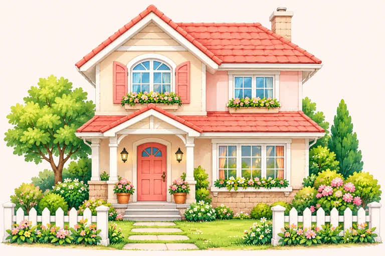

Review 1 · Tiếng Anh 5 Global Success · Trang 40–43
Bài 1 · Unit 1–3Bài 2 · Unit 4–5Bài 3 · Đọc và viết
Ghép những điều đã học thành câu chuyện của em.
Sáu đề tự soạn, nghe ba cấp và trang học từ/phát âm để ôn theo nhịp của em.
Bài1Bản thân, nhà ở và bạn bèSGK trang 40–41
Ôn Unit 1–3, khớp đúng loại thông tin.
dolphin

housefriendlywriter
Can you tell me about yourself? — I am An. I am in Grade 5. What is your address? — It is 21 Rose Street. What nationality is she? — She is Japanese. What is she like? — She is helpful.
In a house/flat; at + địa chỉ cụ thể. Favourite colour/animal khác quốc tịch và tính cách. Địa chỉ trong đề là giả định, không cần địa chỉ thật của em.
Bài2Sở thích và nghề nghiệpSGK trang 40–43
Ôn Unit 4–5 và từ trong phần mở rộng.
What do you like doing? — I like playing the violin. What would you like to be? — I would like to be a writer. Why? — Because I would like to write stories.
Like + V-ing; would like to be a + nghề; would like to + nguyên mẫu. Writer/write stories; reporter/report the news; gardener/grow flowers; teacher/teach children.
Mở rộng trang 42–43: actor — diễn viên; theatre — nhà hát; firefighter — lính cứu hỏa; put out fires — dập lửa. Nghề và sở thích không suy theo giới tính.
Bài3Đọc hồ sơ và viết tổng hợpSGK trang 41–43
Đọc nhiều thông tin nhưng không lẫn người.
Hồ sơ tự soạn: An · Australian · house · 21 Rose Street · friendly · likes playing the violin · future job writer · reason write stories.
Viết: I am An. I am Australian. I live in a house at 21 Rose Street. I like playing the violin. I would like to be a writer because I would like to write stories.
Tự kiểm tra: tên và quốc tịch đúng chưa? In/at đúng chưa? Like + V-ing chưa? Nghề và lý do có cùng hồ sơ không? Đoạn viết mở dùng mẫu tham khảo, không coi chỉ một cách diễn đạt là đúng.
Nội dung tự soạn, bám Review 1 · Global Success 5, tập một